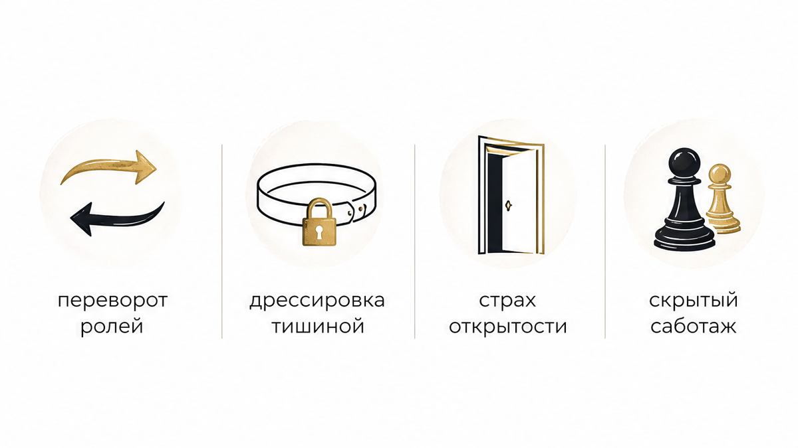
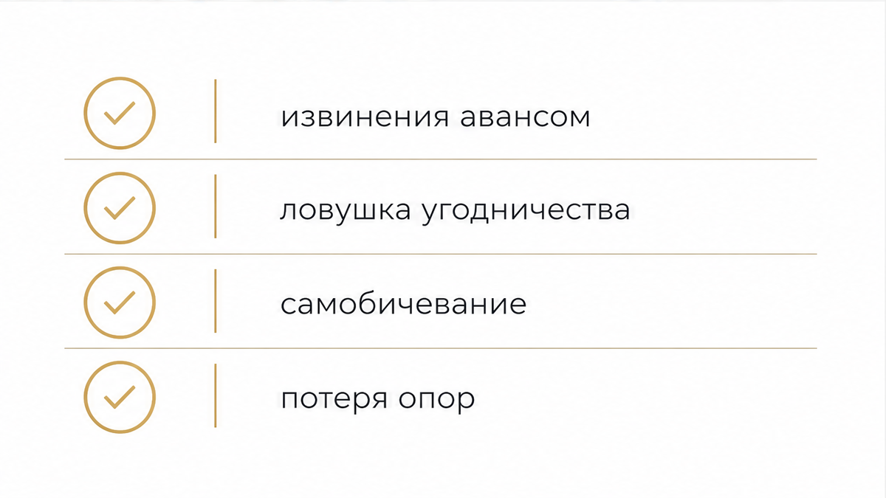
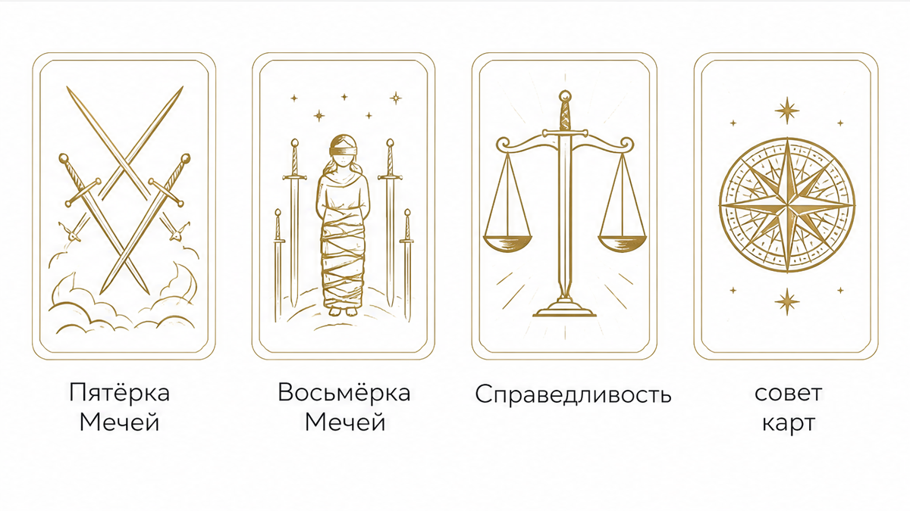

Обычный вечерний разговор, который пять минут назад казался спокойным и тёплым, внезапно налетает на ледяную стену. На невинный вопрос или попытку обсудить планы он резко меняется в лице, скрещивает руки на груди и бросает с холодным пренебрежением: «Ты сама всё испортила. С тобой невозможно нормально разговаривать. Пока не поймёшь, в чём твоя ошибка, нам не о чем говорить». Глухой стук захлопнувшейся двери или сухое «Ясно» в чате с погасшим экраном телефона. В комнате повисает липкая, звенящая тишина.
Внутри мгновенно срывается в штопор привычная тревога. Дыхание перехватывает, а в голове лихорадочно крутятся последние фразы, интонации и случайные взгляды: «Что я сказала не так? Почему не промолчала? Может, я действительно перегнула палку? Как теперь всё исправить?» Пальцы сами тянутся к клавиатуре — отправить длинное объяснительное сообщение, извиниться авансом, сгладить угол любой ценой, лишь бы прекратить эту невыносимую пытку холодом. Останови руку над экраном. В этой тишине нет твоей вины. Здесь работает выверенный манипулятивный сценарий, цель которого — выбить у тебя почву из-под ног и заставить сомневаться в собственной адекватности.
В психологии у этого поведения есть точные названия: висхолдинг и стоунволлинг — намеренное удержание эмоционального контакта и возведение глухой каменной стены. Это не здоровая пауза взрослого человека, которому нужно полчаса в тишине, чтобы остыть после тяжёлого спора и вернуться к диалогу. Зрелый партнёр скажет прямо: «Мне сейчас тяжело, давай сделаем перерыв и вернёмся к этому через час». В манипулятивном сценарии мужчина выключает общение без предупреждения и сроков, демонстративно перекладывая на тебя ответственность за свой побег в глухую оборону.
Когда наказание тишиной сцепляется с обвинением «ты сама виновата», по психике наносится двойной удар. Тебя лишают эмоциональной безопасности и одновременно принуждают поверить, что мир в отношениях держится исключительно на твоём послушании. Чтобы сбросить чужой морок и опереться на трезвую реальность, карты Таро позволяют без иллюзий увидеть скрытую расстановку сил:
Если внутри нарастает тревога, а тишина давит так, что опускаются руки, не оставайся наедине с догадками. Ты можешь сделать 3 бесплатных расклада в боте Макс (выбирай экспресс-триплет или классический «Крест» на отношения) либо запустить Telegram-бот, чтобы сразу увидеть истинные мотивы мужчины.
А если нужно по слоям разобрать скрытые пружины его поведения, твои точки уязвимости и получить ясный вектор выхода из манипуляции — открой расклад «Суть – Тень – Вектор» и послушай глубокий аудиоразбор в приложении ВКонтакте, в приложении Макс или в приложении Telegram.

Когда мужчина демонстративно замолкает и выставляет тебя виноватой, он не защищает свои границы. Он решает свои внутренние дефициты за твой счёт. На практике за таким ледяным бойкотом стоят четыре скрытых сценария:
Классический психологический приём, когда реальный виновник конфликта мгновенно меняет роли жертвы и агрессора. Сначала он отрицает наличие проблемы: «Ничего страшного не было, ты всё раздула». Затем переходит в контратаку: «Ты вечно пилишь меня и устраиваешь скандалы на ровном месте». И тут же переворачивает ситуацию с ног на голову: «Я замолчал только потому, что с тобой невозможно разговаривать, ты сама меня довела». В итоге вместо обсуждения его поступка ты часами оправдываешься за то, каким тоном посмела задать вопрос.
Это холодный расчёт на выработку условного рефлекса страха. Если каждый раз, когда ты обозначаешь границы, просишь внимания или не соглашаешься с его мнением, мужчина уходит в трёхдневный ледяной вакуум, психика усваивает разрушительный урок: любое проявление твоей индивидуальности карается изоляцией. Манипулятор добивается идеального для себя результата: в следующий раз ты проглотишь обиду молча или начнёшь извиняться заранее, лишь бы не спровоцировать очередной приступ его «праведного гнева».
Психологические исследования динамики конфликтов показывают поразительную вещь: более чем в 82% случаев наказание тишиной выбирается вовсе не из-за непоколебимой мужской силы или царственного превосходства. Напротив, за ним прячется острая эмоциональная беспомощность. Мужчина просто не умеет вести открытый диалог на равных, не справляется со сложными чувствами и панически боится признать собственную неправоту. Маска неприступного судьи — это броня инфантила, которому проще хлопнуть дверью и закрыться в раковине, чем честно взглянуть на свои слабости.
Нередко демонстративная обида становится удобным алиби. Объявив тебя виноватой и отключив телефон, человек получает индульгенцию на любые действия: вечера с друзьями, флирт в сети или параллельные связи, оставаясь формально «в домике». Если же ты попытаешься призвать его к ответу, он цинично отчеканит: «Ты сама меня выставила, я просто приходил в себя после твоих претензий». Это удобный способ разрушить отношения чужими руками, переложив весь груз вины за расставание на твои плечи.

Женская природа в отношениях инстинктивно стремится к диалогу и сохранению тепла. Именно на этой природной чуткости и паразитирует висхолдинг. Сталкиваясь с глухой стеной, легко совершить три типичные ошибки, которые окончательно цементируют манипулятивный сценарий:
Извинения за то, чего ты не совершала. Отправка длинных сообщений с оправданиями («Прости меня, если я обидела тебя», «Я не хотела ссориться, давай поговорим») манипулятор считывает как безоговорочную капитуляцию. Ты собственноручно ставишь подпись: «Да, я во всём виновата, твоё наказание справедливо». Для него это сигнал: метод работает безотказно, можно применять его при любом удобном случае.
Угодничество в попытке растопить лёд. Женщина начинает суетиться вокруг молчащего мужчины: готовит любимые блюда, заглядывает в глаза с робкой надеждой, предлагает помощь, пытаясь заслужить хотя бы тёплый взгляд. Отношения равных партнёров превращаются в динамику строгого родителя и провинившегося ребёнка. Чем больше ты угодничаешь, тем сильнее растёт его снисходительное пренебрежение.
Самобичевание и добровольная изоляция. Ты отменяешь планы, не встречаешься с подругами, забрасываешь дела и сидишь над экраном в ожидании звука уведомления. Твоя жизнь замирает, пока он упивается контролем над твоим настроением. Ждать, пока взрослый мужчина определится со своими чувствами и соблаговолит сменить гнев на милость — самая дорогая аренда в твоей жизни. Ты платишь за неё своим сном, спокойствием и самоуважением.

Когда логика буксует, а прямого разговора нет, арканы Таро работают как точный психологический рентген. Они снимают наведённое чувство вины, обнажают скрытые мотивы мужчины и возвращают тебе трезвую опору:
Пятёрка Мечей — триумф уязвления и пиррова победа. Главный аркан манипулятивного подавления. На карте изображён победитель с кривой ухмылкой, собравший чужие мечи, и поверженные фигуры, уходящие прочь. Мужчина упивается тем, что заставил тебя страдать и сломал твоё сопротивление. Однако это пиррова победа: разрушая доверие и выбивая уступки холодом, он хоронит саму близость. В его руках трофеи, но за спиной — выжженная земля.
Восьмёрка Мечей — ментальная клетка навязанной вины. Точный портрет женщины под прессингом висхолдинга. Фигура со связанными руками и повязкой на глазах окружена острыми клинками. Кажется, что выхода нет, а каждое движение причинит боль. Но присмотрись к аркану: мечи не касаются тела, путы на руках накинуты свободно, а земля под ногами сухая и открытая. Ментальная клетка существует только до тех пор, пока ты веришь в свою «виновность». Сними повязку чужих манипуляций — и ты увидишь, что совершенно свободна сделать шаг в любую сторону.
Рыцарь Мечей — эмоциональный холод и позиция строгого судьи. Эмпатия отключена, клинок критики наготове. Мужчина надевает мантию непогрешимого арбитра и рационализирует свою жестокость: «Я наказываю тебя ради твоего же блага, чтобы ты наконец подумала над своим поведением». Искать тепла или сочувствия за этой бронёй бесполезно — там нет диалога, там есть только холодная фиксация собственной правоты.
Дьявол — крючок эмоциональной зависимости. Чувство вины — это самый прочный поводок, на котором манипулятор удерживает жертву. Аркан подсвечивает токсичную связку: страх отвержения заставляет женщину терпеть пренебрежение и выпрашивать крупицы одобрения. Карты напоминают: оковы Дьявола всегда держатся на иллюзиях. Стоит признать собственную ценность, и поводок рассыпается в пыль.
Справедливость — трезвый баланс и снятие чужой ответственности. Меч этого аркана беспристрастно отсекает чужие проекции, а весы возвращают равновесие. Каждый взрослый человек отвечает исключительно за свои поступки и слова. Выбор закрыться, хлопнуть дверью и наказывать тишиной — это личный выбор мужчины. Ты не обязана нести за него ответственность или оплачивать его инфантилизм своим душевным миром.
Чтобы сломать манипулятивный сценарий и вернуть себе эмоциональный суверенитет, перестань играть по навязанным правилам. Действуй по чёткому алгоритму:
Наказание тишиной всегда рассчитано на то, что ты потеряешь равновесие, испугаешься неизвестности и приползёшь с повинной. Но в ту самую секунду, когда ты отказываешься брать чужую вину на себя и спокойно выдерживаешь паузу, манипуляция теряет всякую власть.
Ты не обязана быть удобной, покладистой и вечно виноватой, чтобы заслуживать уважение и искреннее тепло. Зрелая близость строится на открытом диалоге двух равных людей, а не на игре в наказания и поощрения. Сделай глубокий вдох, верни себе право на собственные чувства и позволь арканам подсказать верный шаг к внутренней свободе.
Чтобы прямо сейчас снять мучительную неопределённость и узнать истинную подоплёку его поведения, запусти 3 бесплатных расклада в боте Макс или сделай расклад через Telegram-бот.
А чтобы восстановить душевный покой, вернуть границы и услышать подробный анализ вашей связи, открой расклад «Суть – Тень – Вектор» и включи глубокий аудиоразбор в приложении ВКонтакте, в приложении Макс или в приложении Telegram.